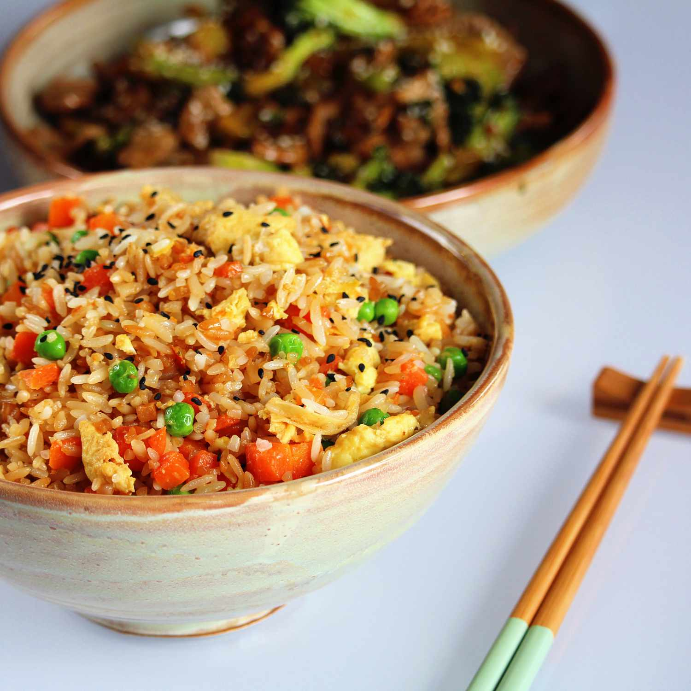

Fried Rice

Description
This egg fried rice recipe is the best!
It tastes just like take-out and is ready to serve in a flash.
Ingredients
- Canola oil: 4 teaspoons
- Eggs: 2 large eggs, beaten
- Carrots: 2 chopped carrots
- Seasoning: Salt and black pepper to taste
- Garlic: 3 cloves, crushed
- Peas: 1 cup of frozen peas
- Scallions: 4 scallions, minced
- Rice: 4 cups chilled rice
- Soy Sauce: 1 teaspoon, or to taste
Steps
-
Heat a wok or large skillet over high heat;
add 1 teaspoon canola oil.
Cook and stir eggs in the hot oil until scrambled and set, 3 to 4 minutes.
Transfer eggs to a plate, clean the wok, and return to high heat.
-
Mix 1 tablespoon canola oil,
carrots, and salt in the hot wok;
cook and stir for 2 minutes. Add garlic to carrots;
cook and stir until garlic is fragrant and browned, about 2 minutes.
Stir peas and scallions into carrot mixture;
cook and stir until peas are warmed,
1 to 2 minutes.
Lower heat to medium.
-
Stir rice into carrot mixture;
add scrambled eggs, soy sauce, salt, and pepper.
Cook and stir rice mixture until heated through, 2 to 3 minutes.